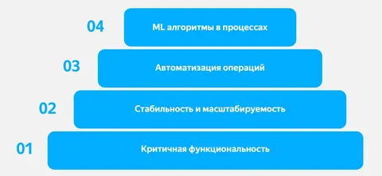

Несколько дней назад на одной из встреч коллега Андрей говорил о стратегии своего направления. Одна мысль мне так зашла, что не могу ей не поделиться. В целом, идея не нова, но для кого-то может стать eye-opening.
Наподобие пирамиды Маслоу, у вашего сериса тоже есть некоторая иерархия потребностей. И пока потребности нижних слоев не удовлетворены, остальное - не так важно.
В основании пирамиды лежит критическая функциональность. Если она не работает, как часы (в случае, если вы разрабатываете часы - они должны показывать время!), сначала нужно добиться этого. У вас MVP - доработайте основную функциональность. У вас баги торчат из всех щелей - сначала почините все криты.
Следующий слой - стабильность и масштабируемость. Если система частенько рушится, или вы не знаете как вывезти рост х2 - руки прочь от всяких свистелок и бантиков! Иначе у вас будет стабильно не работающая по пятницам свистелка с бантиком, которая показывает время лишь через раз, и то неправильное.
Когда вы соблюли базовую гигиену с предыдущих слоев, можно переходить к стадии улучшения качества жизни. Автоматизация, умеренный ML (хотя, как мы помним, почти любой ML можно заменить тремя if-ами ;) ) - продолжая аллюзию с часами это будет автоподзавод и синхронизация времени по сигналу спутника.
И лишь когда у вас уже все хорошо, можно переходить к более развесистому ML/AI (в том числе в процессах) - в наших часах это будет голосовой аи-помощник и фитнес-трекинг.
А еще важно, чтобы пользователи вашего сервиса тоже помнили его основное предназначение. В воскресенье были с коллегами на ивенте, и Рома забыл телефон в машине. А без телефона он даже время не мог посмотреть, чтобы понять, сколько осталось до начала ивента. Впрочем, через пару вопросов к нам "сколько времени?" он все же вспомнил, что часы на его руке еще и время показывают, даже без синка с телефоном в кармане.
Мораль - не спешите прикручивать ЛЛМ к едва-работающему кирпичу, просто потому, что это модно. Сначала вложитесь в удовлетворение более приземленных потребностей. А там уже - бог вам судья, хоть AI, хоть бантики.
